Nonlinear 4 DOF articulated vehicle model
Contents
Sintax
dx = VehicleModel.Model(~,estados)
Arguments
The following table describes the input arguments:
| estados | Estados do modelo: [dPSI ALPHAT dPHI VEL PHI PSI XT YT] |
Description
O �ngulo 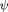 define a orienta��o do caminh�o-trator em rela��o ao referencial inercial. O estado  � o �ngulo formado entre o caminh�o-trator e o semirreboque. O �ngulo 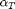 � o �ngulo de deriva do m�dulo dianteiro e � formado pelo vetor velocidade do centro de massa e a linha longitudinal do caminh�o-trator. Por fim, 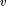 � o m�dulo do vetor velocidade do centro de massa do caminh�o-trator. Os pontos 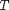 e 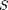 s�o coincidentes com os centros de massa do caminh�o-trator e semirreboque, respectivamente. Os pontos F e R s�o coincidentes com os eixos dianteiro e traseiro do caminh�o-trator, respectivamente. M � o ponto que representa o eixo do semirreboque e A � o ponto de articula��o ente as duas unidades. As grandezas a, b e c da unidade motora s�o as dist�ncias entre os pontos F-T, T-R e R-A, respectivamente. Na unidade movida, d e e definem as dist�ncias entre os pontos A-S e S-M, respectivamente.
� o �ngulo formado entre o caminh�o-trator e o semirreboque. O �ngulo 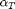 � o �ngulo de deriva do m�dulo dianteiro e � formado pelo vetor velocidade do centro de massa e a linha longitudinal do caminh�o-trator. Por fim, 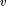 � o m�dulo do vetor velocidade do centro de massa do caminh�o-trator. Os pontos 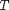 e 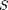 s�o coincidentes com os centros de massa do caminh�o-trator e semirreboque, respectivamente. Os pontos F e R s�o coincidentes com os eixos dianteiro e traseiro do caminh�o-trator, respectivamente. M � o ponto que representa o eixo do semirreboque e A � o ponto de articula��o ente as duas unidades. As grandezas a, b e c da unidade motora s�o as dist�ncias entre os pontos F-T, T-R e R-A, respectivamente. Na unidade movida, d e e definem as dist�ncias entre os pontos A-S e S-M, respectivamente.
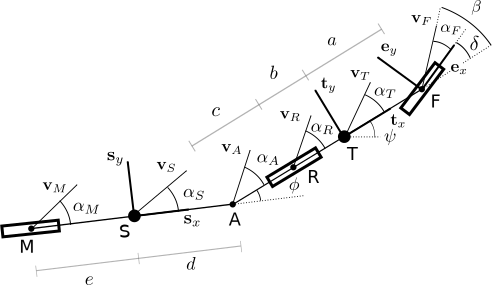
Este modelo � escrito na forma:
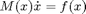
Onde � o vetor de estados, 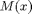 � a matriz de massa do sistema e 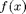 � uma fun��o vetorial n�o linear. Logo, � necess�ria uma fun��o que permita a integra��o do sistema com a matriz de massa escrita explicitamente. Uma op��o � utilizar a fun��o ode45. Details: ode45 (Mass matrix)
Code
classdef VehicleArticulatedNonlinear4DOF < VehicleDynamicsLateral.VehicleArticulated
methods
% Constructor function self = VehicleArticulatedNonlinear4DOF(varargin) if nargin == 0 % Entrada padr�o dos dados do ve�culo mF0 = 5237; % Massa no eixo dianteiro do caminh�o-trator desacoplado [kg] mR0 = 2440; % Massa no eixo traseiro do caminh�o-trator desacoplado [kg] mF = 6000; % Massa no eixo dianteiro do caminh�o-trator (F) [kg] mR = 10000; % Massa no eixo traseiro do caminh�o-trator (R) [kg] mM = 17000; % Massa no eixo do semirreboque (M) [kg] IT = 46100; % Momento de in�rcia do caminh�o-trator [kg*m2] IS = 452010; % Momento de in�rcia do semirreboque [kg*m2] DELTA = 0; % Ester�amento do eixo dianteiro [rad] c = -0.310; % Dist�ncia da articula��o ao eixo traseiro do caminh�o-trator (A-R) [m] lT = 3.550; % Dist�ncia entre os eixos do caminh�o-trator [m] lS = 7.700; % Dist�ncia entre a articula��o e o eixo do semirreboque [m] nF = 2; % N�mero de tires no eixo dianteiro do caminh�o-trator nR = 4; % N�mero de tires no eixo traseiro do caminh�o-trator nM = 8; % N�mero de tires no eixo do semirreboque widthT = 2.6; % width do caminh�o-trator [m] widthS = 2.550; % width do semirreboque [m] muy = 0.3; % Coeficiente de atrito de opera��o entradaVetor = [mF0 mR0 mF mR mM IT IS DELTA c lT lS nF nR nM widthT widthS muy]; % Definindo os par�metros da classe self.params = self.convert(entradaVetor); self.tire = VehicleDynamicsLateral.TirePacejka1989; else self.params = self.convert(varargin{1}); self.tire = varargin{2}; end self.distFT = self.params(20); self.distTR = self.params(21); self.distRA = self.params(9); self.distAS = self.params(22); self.distSM = self.params(23); self.width = self.params(15); self.widthSemi = self.params(16); end
Model
Fun��o com as equa��es de estado do modelo
function dx = Model(self,~,estados) % Dados do ve�culo mT = self.params(18); % massa do veiculo [kg] mS = self.params(19); % massa do veiculo [kg] % IT = self.params(6); % momento de inercia [kg] % IS = self.params(7); % momento de inercia [kg] a = self.params(20); % distancia do eixo dianteiro ao centro de massa do caminh�o-trator [m] b = self.params(21); % distancia do eixo traseiro ao centro de massa do caminh�o-trator [m] c = self.params(9); % distancia da articula��o ao centro de massa do caminh�o-trator [m] d = self.params(22); % distancia do eixo traseiro ao centro de massa do caminh�o-trator [m] e = self.params(23); % distancia da articula��o ao centro de massa do caminh�o-trator [m] DELTA = self.params(8); % Ester�amento [rad] nF = self.params(12); % N�mero de tires no eixo dianteiro do caminh�o-trator nR = self.params(13); % N�mero de tires no eixo traseiro do caminh�o-trator nM = self.params(14); % N�mero de tires no eixo do semirreboque g = 9.81; % Acelera��o da gravidade [m/s^2] FzF = self.params(3)*g; % Carga vertical no eixo dianteiro [N] FzR = self.params(4)*g; % Carga vertical no eixo traseiro [N] FzM = self.params(5)*g; % Carga vertical no eixo do semirreboque [N] muy = self.params(17); % Coeficiente de atrito de opera��o % Defini��o dos estados dPSI = estados(1,1); % Velocidade angular do caminh�o-trator [rad/s] ALPHAT = estados(2,1); % �ngulo de deriva do CG do caminh�o-trator [rad] dPHI = estados(3,1); % Velocidade angular relativa entre o semirreboque e o caminh�o-trator [rad/s] VEL = estados(4,1); % �ngulo relativo entre o semirreboque e o caminh�o-trator [rad] PHI = estados(5,1); % M�dulo do vetor velocidade do CG do caminh�o-trator [m/s] PSI = estados(6,1); % �ngulo de orienta��o do caminh�o-trator [rad] % Angulos de deriva n�o linear ALPHAF = atan2((a*dPSI + VEL*sin(ALPHAT)),(VEL*cos(ALPHAT))) - DELTA; ALPHAR = atan2((-b*dPSI + VEL*sin(ALPHAT)),(VEL*cos(ALPHAT))); ALPHAM = atan2(((d + e)*(dPHI - dPSI) + VEL*sin(ALPHAT + PHI) - b*dPSI*cos(PHI) - ... c*dPSI*cos(PHI)),(VEL*cos(ALPHAT + PHI) + b*dPSI*sin(PHI) + c*dPSI*sin(PHI))); % For�as longitudinais FxF = 0; FxR = 0; FxM = 0; % For�as laterais nos tires - Curva caracter�stica FyF = nF*self.tire.Characteristic(ALPHAF,FzF/nF,muy); FyR = nR*self.tire.Characteristic(ALPHAR,FzR/nR,muy); FyM = nM*self.tire.Characteristic(ALPHAM,FzM/nM,muy); % ddPSI,dALPHAT,ddPHI,dPHI,dVEL % f1 = FxR + FxF*cos(DELTA) + FxM*cos(PHI) - FyF*sin(DELTA) + FyM*sin(PHI) - b*dPSI^2*mS - c*dPSI^2*mS + VEL*dPSI*mS*sin(ALPHAT) ... % + VEL*dPSI*mT*sin(ALPHAT) - d*dPHI^2*mS*cos(PHI) - d*dPSI^2*mS*cos(PHI) + 2*d*dPHI*dPSI*mS*cos(PHI); % f2 = FyR + FyF*cos(DELTA) + FyM*cos(PHI) + FxF*sin(DELTA) - FxM*sin(PHI) - VEL*dPSI*mS*cos(ALPHAT) - VEL*dPSI*mT*cos(ALPHAT) + ... % d*dPHI^2*mS*sin(PHI) + d*dPSI^2*mS*sin(PHI) - 2*d*dPHI*dPSI*mS*sin(PHI); % f3 = a*(FyF*cos(DELTA) + FxF*sin(DELTA)) - FyR*b - (b + c)*(d*mS*sin(PHI)*dPHI^2 - 2*d*mS*sin(PHI)*dPHI*dPSI + d*mS*sin(PHI)*dPSI^2 - ... % VEL*mS*cos(ALPHAT)*dPSI + FyM*cos(PHI) - FxM*sin(PHI)); % f4 = d*(b*dPSI^2*mS*sin(PHI) - FyM + c*dPSI^2*mS*sin(PHI) + VEL*dPSI*mS*cos(ALPHAT + PHI)) - FyM*e; f1 = FxR + FxF*cos(DELTA) + FxM*cos(PHI) - FyF*sin(DELTA) + FyM*sin(PHI) - (b + c)*dPSI^2*mS + (mT + mS)*VEL*dPSI*sin(ALPHAT) - (dPSI - dPHI)^2*mS*d*cos(PHI); f2 = FyR + FyF*cos(DELTA) + FyM*cos(PHI) + FxF*sin(DELTA) - FxM*sin(PHI) - (mT + mS)*VEL*dPSI*cos(ALPHAT) + (dPSI - dPHI)^2*mS*d*sin(PHI); f3 = a*(FyF*cos(DELTA) + FxF*sin(DELTA)) - FyR*b - (b + c)*(-FxM*sin(PHI) + FyM*cos(PHI) - VEL*mS*cos(ALPHAT)*dPSI + (dPSI - dPHI)^2*mS*d*sin(PHI)); f4 = d*(b*dPSI^2*mS*sin(PHI) - FyM + c*dPSI^2*mS*sin(PHI) + VEL*dPSI*mS*cos(ALPHAT+ PHI)) - FyM*e; f5 = dPHI; f = [f1 ; f2 ; f3 ; f4 ; f5]; % Equa��es adicionais para o posicionamento (N�o necess�rias para a din�mica em guinada) dx6 = dPSI; dx7 = VEL*cos(ALPHAT + PSI); % X dx8 = VEL*sin(ALPHAT + PSI); % Y dx = [f;... dx6;... dx7;... dx8]; end
Matriz de massa
function M = MassMatrix(self,~,estados) % Dados do ve�culo mT = self.params(18); % massa do veiculo [kg] mS = self.params(19); % massa do veiculo [kg] IT = self.params(6); % momento de inercia [kg] IS = self.params(7); % momento de inercia [kg] % a = self.params(20); % distancia do eixo dianteiro ao centro de massa do caminh�o-trator [m] b = self.params(21); % distancia do eixo traseiro ao centro de massa do caminh�o-trator [m] c = self.params(9); % distancia da articula��o ao centro de massa do caminh�o-trator [m] d = self.params(22); % distancia do eixo traseiro ao centro de massa do caminh�o-trator [m] % e = self.params(23); % distancia da articula��o ao centro de massa do caminh�o-trator [m] % DELTA = self.params(8); % Ester�amento [rad] % nF = self.params(12); % N�mero de tires no eixo dianteiro do caminh�o-trator % nR = self.params(13); % N�mero de tires no eixo traseiro do caminh�o-trator % nM = self.params(14); % N�mero de tires no eixo do semirreboque % g = 9.81; % Acelera��o da gravidade [m/s^2] % FzF = self.params(3)*g; % Carga vertical no eixo dianteiro [N] % FzR = self.params(4)*g; % Carga vertical no eixo traseiro [N] % FzM = self.params(5)*g; % Carga vertical no eixo do semirreboque [N] % muy = self.params(17); % Coeficiente de atrito de opera��o % Defini��o dos estados % dPSI = estados(1,1); % Velocidade angular do caminh�o-trator [rad/s] ALPHAT = estados(2,1); % �ngulo de deriva do CG do caminh�o-trator [rad] % dPHI = estados(3,1); % Velocidade angular relativa entre o semirreboque e o caminh�o-trator [rad/s] VEL = estados(4,1); % �ngulo relativo entre o semirreboque e o caminh�o-trator [rad] PHI = estados(5,1); % M�dulo do vetor velocidade do CG do caminh�o-trator [m/s] % PSI = estados(6,1); % �ngulo de orienta��o do caminh�o-trator [rad] % Matriz de massa M11 = -d*mS*sin(PHI); M12 = -VEL*sin(ALPHAT)*(mS + mT); M13 = d*mS*sin(PHI); M14 = cos(ALPHAT)*(mS + mT); M21 = -mS*(b + c + d*cos(PHI)); M22 = VEL*cos(ALPHAT)*(mS + mT); M23 = d*mS*cos(PHI); M24 = sin(ALPHAT)*(mS + mT); M31 = IT + mS*(b + c)*(b + c + d*cos(PHI)); M32 = -VEL*mS*cos(ALPHAT)*(b + c); M33 = -d*mS*cos(PHI)*(b + c); M34 = -mS*sin(ALPHAT)*(b + c); M41 = IS + d*mS*(d + cos(PHI)*(b + c)); M42 = -VEL*d*mS*cos(ALPHAT + PHI); M43 = - mS*d^2 - IS; M44 = -d*mS*sin(ALPHAT + PHI); M = [M11 M12 M13 M14 0 0 0 0;... M21 M22 M23 M24 0 0 0 0;... M31 M32 M33 M34 0 0 0 0;... M41 M42 M43 M44 0 0 0 0;... 0 0 0 0 1 0 0 0;... 0 0 0 0 0 1 0 0;... 0 0 0 0 0 0 1 0;... 0 0 0 0 0 0 0 1]; end
end
methods (Static)
convert
A fun��o convert adiciona no vetor de entrada ([mF0 mR0 mF mR mM IT IS DELTA c lT lS nF nR nM widthT widthS muy]) os par�metros restantes do modelo de ve�culo ([mT mS a b d e]).
function parametros = convert(entrada) mF0 = entrada(1); % Massa no eixo dianteiro do caminh�o-trator desacoplado [kg] mR0 = entrada(2); % Massa no eixo traseiro do caminh�o-trator desacoplado [kg] mF = entrada(3); % Massa no eixo dianteiro do caminh�o-trator (F) [kg] mR = entrada(4); % Massa no eixo traseiro do caminh�o-trator (R) [kg] mM = entrada(5); % Massa no eixo do semirreboque (M) [kg] lT = entrada(10); % Dist�ncia entre os eixos do caminh�o-trator [m] lS = entrada(11); % Dist�ncia entre a articula��o e o eixo do semirreboque [m] % Convers�o dos dados para os par�metros usados na equa��o de movimento g = 9.81; % Acelera��o da gravidade [m/s^2] mT = mF0 + mR0; % massa do caminh�o-trator [kg] a = mR0/mT*lT; % Dist�ncia do eixo dianteiro ao CG do caminh�o-trator (F-T) [m] b = lT - a; % Dist�ncia do eixo traseiro ao CG do caminh�o-trator (R-T) [m] A = mF*g + mR*g - mT*g; % For�a vertical na articula��o [N] mS = (A + mM*g)/g; % massa do semirreboque [kg] d = (lS*mM)/mS; % Dist�ncia da articula��o ao CG do semirreboque (A-S) [m] e = lS - d; % Dist�ncia do eixo traseiro ao CG do semirreboque (M-S) [m] % Sa�da parametros = [entrada mT mS a b d e]; end
end
Properties
properties
params
tire
distFT
distTR
distRA
distAS
distSM
width % width do caminh�o-trator
widthSemi % width do semirreboque
end
end